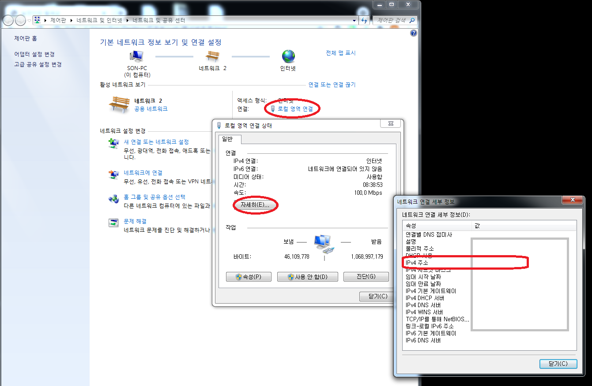

-
웹서버 설치
- 운영체제별로 3개 영상
- "how to install apache http server window(or mac os or linux)" 로 검색하기
- 아파치 웹 사이트 공식 홈페이지에서 명시된 설치시 자동으로 아파치서버가 깔리도록 지원해주는 bitnami 프로그램 설치
- 비트나미 사이트 가서 local instal에서 설치 누르고,
- 공유해줄거냐고 물으면 no,thanks 해줘도 된다.
- 인스톨러를 받았으면 실행하여 설치해주자.
- 설치 경로는 확인해두면 유용하다.
- MYSQL의 비밀번호 설정을 요청하는데
- 설정하고 비번을 기억해두도록 하자(생활코딩 수업에서는 활용되지 않음)
- 방화벽도 허용해주자
- lanch bitnami wamp stack 체크하고 설치완료
- 번외로 설치 중에 웹작업을 같이 진행했더니 나는 설치에러가 떴다. 따라서 설치 중에는 컴퓨터의 다른 작업은 멈춰주도록 하자.
- 그러면 bitnami stack 매니저 프로그램을 확인할 수 있다.
- go to application을 누르고 기다리면
- 비트나미 웹브라우저가 뜰것이다. 뜬다면 설치 성공!
-
비트나미 매니저 사용
- 비트나미 매니저를 설치 경로를 따라 들어가면
- C:\Bitnami\wampstack폴더 안의 manager-windows를 더블 클릭하여 비트나미 매니저 실행
- 이 프로그램을 이용하여 웹서버를 켜고 끄고할 수 있다.(manage servers탭에서)
- 아파치 서버를 끈다면 아파치 서버 관련 웹 브라우저를 새로고침시 연결이 끊기는 걸 확인 할수 있다.
-
웹브라우저와 웹서버 관계 살펴보기
- 웹브라우저 주소란에 127.0.0.1/index.html을 입력하면
- index.html 파일이 웹브라우저에 표기된다.
- 이 index.html 파일은
- 결론부터 말하면 C:\Bitnami\wampstack\apache2\htdocs 폴더 속 index.html파일인데
- 이 파일을 불러오는 과정를 살펴보자.
- 처음 웹 브라우저 주소란에 쳤던 127.0.0.1는 ip주소이다.
- 이 아이피 주소는 웹브라우저가 설치되어 있는 각자의 컴퓨터를 가리키는 특수한, 약속된 주소이다.
- 그리고 index.html을 입력하면
- 웹브라우저가 웹서버에 접속해서 index.html파일을 요청하게 된다.
- 요청을 받은 웹서버는 C:\Bitnami\wampstack\apache2\htdocs 폴더에서 index.html을 찾도록 초기설정 되어있다.
- (설정은 바꿀수 있음)
- 따라서 웹브라우저에게 문서를 요청받은 웹서버는 설정에 의해 htdocs 폴더 속 index.html파일을 웹브라우저에 전달해준다.
- 파일을 받은 웹브라우저는 문서를 해석해서 화면에 출력한다.
-
내 문서를 적용해보자.
- C:\Bitnami\wampstack\apache2\htdocs 폴더 속 기존의 파일들을 지운다.
- 내가 작업한 문서들을 htdocs 폴더 속에 복사 붙여넣기한다.
-
http:// 와 file:// 의 차이점
- http://는 웹브라우저와 웹서버가 통신하여 관련 문서를 보여주는 방식이다.Hyper Text Transfer Protocol의 줄임말.
- file://은 웹브라우저가 자체 컴퓨터 내장 문서를 찾아 보여주는 방식이다.
- 즉 서로 다른 컴퓨터에 있는 웹브라우저와 웹서버가 통신하기 위해서는 반드시 http를 사용해야한다.
-
웹브라우저와 웹서버 통신 이해
- 웹브라우저가 http를 통해 웹서버와 통신할때는 ip주소가 필요하다.
- 2가지 조건이 필요하다.
- 첫째 2대의 컴퓨터가 필요하다.
- 우린 컴퓨터와 모바일폰이 있으니 폰에서 웹브라우저를 키고 컴퓨터에서 웹서버 역할이 가능하다.
- 나머지 하나는 아마 ip주소?
-
웹 서버가 설치된 컴퓨터의 ip주소를 알아보자
- 컴퓨터 우측하단 시계 좌측 컴퓨터 아이콘 우클릭하자.

- 네트워크 및 공유문서 열기(open network and sharing center) 클릭

- 여기서 ip주소 확인 가능하다.
-
웹 브라우저와 웹 서버 통신해보자
- 같은 네트워크를 사용해야한다.
- 웹 브라우저 주소란에 알아낸 ip주소.index.html을 입력하면
- ip주소에 해당하는 컴퓨터의 웹 서버가 C:\Bitnami\wampstack\apache2\htdocs폴더에서
- index.html 문서를 찾아서 웹 브라우저에게 전달해 줄 것이다.
-
마치며
- 아쉽게도 도메인이라던가 전세계에 누구나 우리 집 웹 서버에 접속하게 하는 방법은 이 수업에서 벗어난다.
- 생활코딩 web2에서 계속해서 배울 수 있을것이다.
- 정보기술의 중추라고 할수있는 인터넷이 돌아가는 기본원리를 배웠다.
- 서버, 클라이언트, ip주소가 무엇인지 이해했고 어떻게 내 컴퓨터의 ip주소를 알아내는지 배울 수 있었다.
- 또 두 대의 컴퓨터가 통신하는 걸 살펴보았다.
- 가장 기본적인 토대를 닦을 수 있었다.